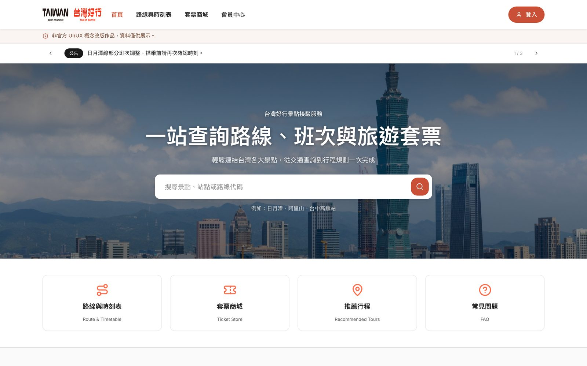
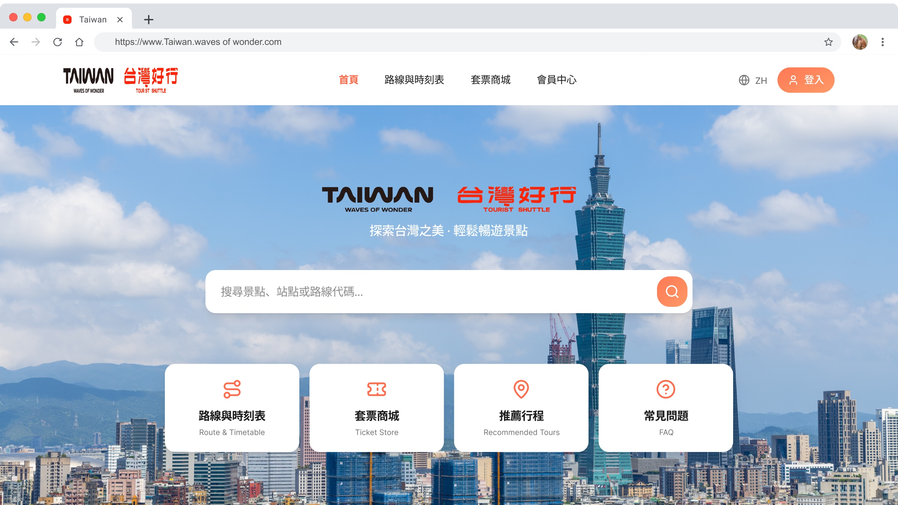
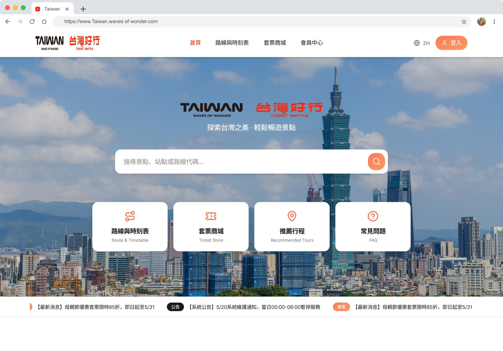
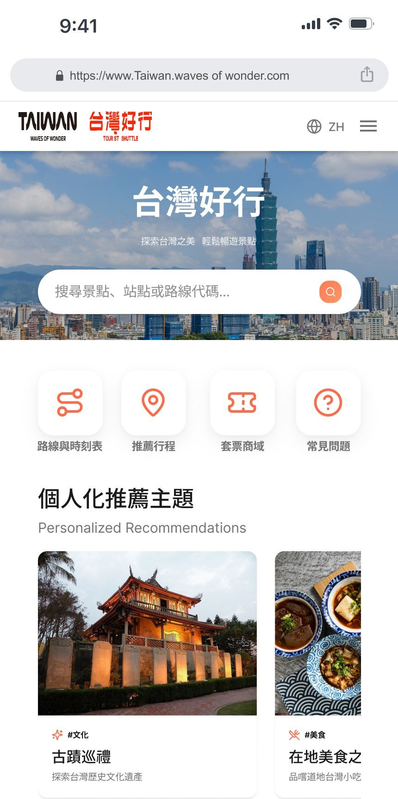
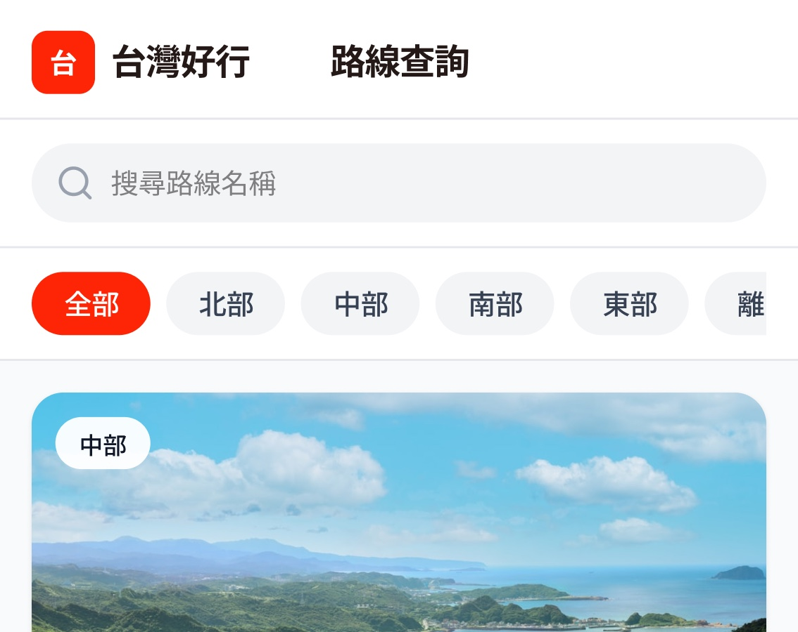
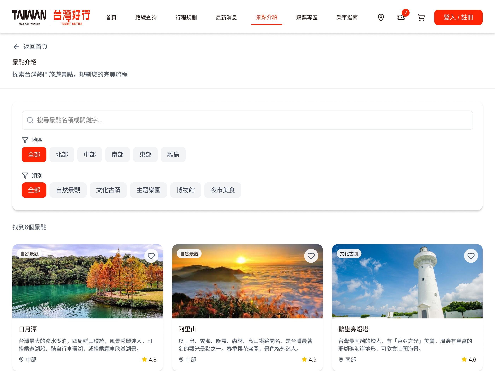
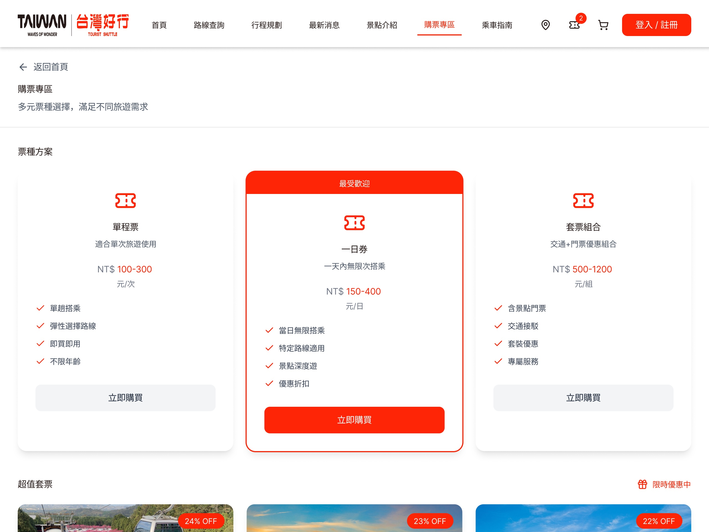

Case Study · Responsive Website
台灣好行 RWD
公共交通旅遊網站重設計，改善旅客查找時刻表、路線、票價與景點資訊的效率，並確保在手機、平板與桌機都有一致且易用的體驗。
同一套設計語言，跨手機、平板、桌機說同一個故事。
RWD Design
Public Service
Accessibility

專案背景
台灣好行是提供旅客串連景點的公共交通服務，原網站在手機上查找時刻表、路線與票價時，容易因為版面擁擠與資訊層級不清而降低效率。這個重設計專案希望以旅客的查找流程為主軸，重新規劃資訊架構與跨裝置的版面配置。
問題一
跨裝置體驗不一致
原網站在手機上的資訊層級與桌機落差大，關鍵資訊常需要多次點擊才能找到。
問題二
資訊類型多元
時刻表、路線、票價與景點介紹性質不同，卻共用相近的版面樣式。
問題三
公共服務可及性
使用族群橫跨不同年齡層，需兼顧清楚的字級對比與操作可及性。
跨裝置呈現
同一套設計系統延伸至手機、平板與筆電，確保資訊架構與視覺語彙一致。



關鍵畫面
路線查詢、景點介紹到購票專區，皆以清楚的資訊層級降低旅客查找成本。



成果與反思
透過重新規劃資訊架構，並針對不同裝置調整版面而非單純縮放，使旅客在手機上也能快速完成查找路線與購票等任務。這個專案也讓我更重視公共服務類網站在可及性與資訊層級上的責任。